Réponses et solutions du TP4
1 Réponses et solutions du TP4
1.1 Réponses aux questions de la partie 1
C’est seulement en combinant les 3 termes dans une recherche internet qu’on peut atteindre les sites de référencement des structures des protéines.
On accède en priorité aux sites AlphaFold, RCSB, UniProt, wwPDB, cathDB parmi les sites wikipédia et EMBL et NCBI.
Les sites permettant d’avoir accès aux structures protéiques réelles sont principalement les sites NCBI et RSCB (ou les autres PDB).
Les services proposés sont équivalents, mais organisés de manière différente et certaines fonctions ne se retrouvent que sur certains sites.
1.2 Réponses aux questions de la partie 2
- Pour identifier une séquence inconnue, il faut utiliser BLAST. Sur le site de BLAST, on choisit blastp puisqu’on veut rechercher une protéine et que le plus simple est de rechercher dans une base de données protéique (Les plus utilisées sont SwissProt/UniProt et Ref_Seq_Protein)
- On choisit par exemple le paramètre DB=“UniProt/SwissProt”, en laissant les autres paramètres présélectionnés (Matrice, Gap, Word size, etc)
- On identifie la protéine HBG2 humaine
- Plusieurs dizaines de modèles existent sur le site RCSB
- Vous pouvez sélectionner celui que vous voulez. Au moment de la rédaction de ces réponses, les modèles 4MQJ, 4MQK et 7QU4 sont des modèles valides.
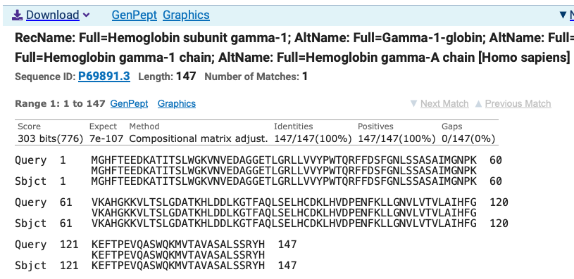
1.3 Réponses aux questions de la partie 3
- Sur le site AlphaFold, une recherche de HBG2 permet de trouver la séquence humaine
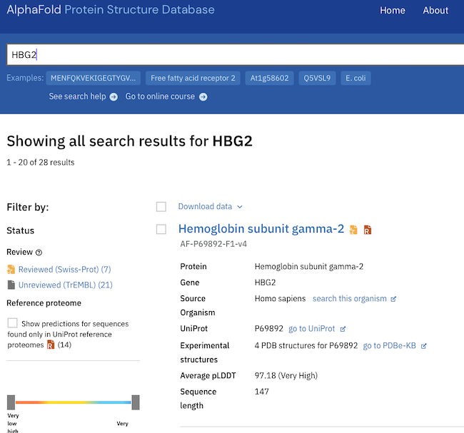
Son code d’accès est : AF-P69892-F1-v6
Dans la partie information, on trouve les liens vers les autres bases de données, les noms de la protéine, l’espèce et le nombre de structures disponibles dans la PDB ainsi que son rôle biologique
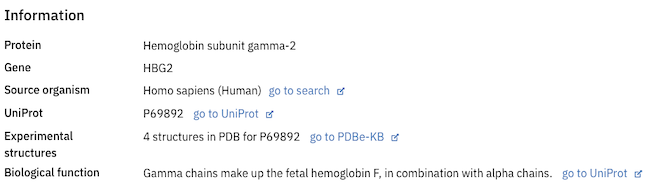
- La partie “Summary and model confidence” montre une représentation en 3D interactive de la protéine. Trois onglets permettant d’afficher la séquence en différentes couleurs
“Model confidence” renseigne sur le taux de confiance du repliement de la séquence basé sur la mesure du pLDDT (per-residue model confidence score). le pLDDT mesure la probabilité de présence de l’acide aminé à la bonne position. Jusqu’à 70%, la confiance est bonne, en dessous de 70%, il y a des problèmes, en dessous de 50%, le logiciel prédit des zones désordonnées. L’aide indique “Regions with pLDDT between 50 and 70 are low confidence and should be treated with caution”.
“AlphaMissense Pathogenicity” montre les zones de mutation avec leur risque sur l’activité de la protéine. Il est associé à une heatmap de l’effet de chaque mutation (Cet affichage ne semble plus actif depuis la dernière mise à jour).
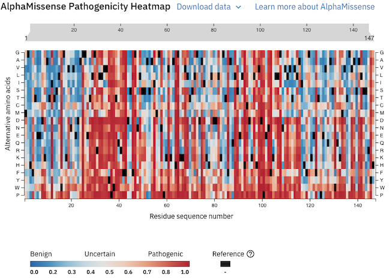
- “TED domains” est aussi associé à une heatmap indiquant le degré de confiance de repliement du domaine dans la base de données. Plus le vert est intense, plus la confiance est haute (Cet affichage ne semble plus actif depuis la dernière mise à jour).
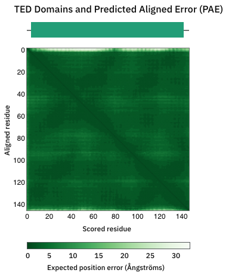
1.4 Prédiction de repliement
Une fois connecté au serveur d’AlphaFold3 avec votre adresse gmail, vous ouvrez la page suivante d’entrée de séquence et collez la séquence protéique de HBG2 :

- En cliquant sur les 3 petits points verticaux en bout de ligne, vous avez accès aux réglages (seed). Vous pouvez également changer des acides aminés et simuler l’effet de mutations sur la structure protéique.
- On clique sur le bouton “Continue and preview job” pour lancer le calcul (Vous pouvez nommer le travail avant de cliquer sur le bouton)
- Le résultat obtenu est présenté sous la forme d’une structure colorée avec des valeurs de pLDDT et d’un dotplot montrant la confiance des positions de chaque acide aminé de la séquence.
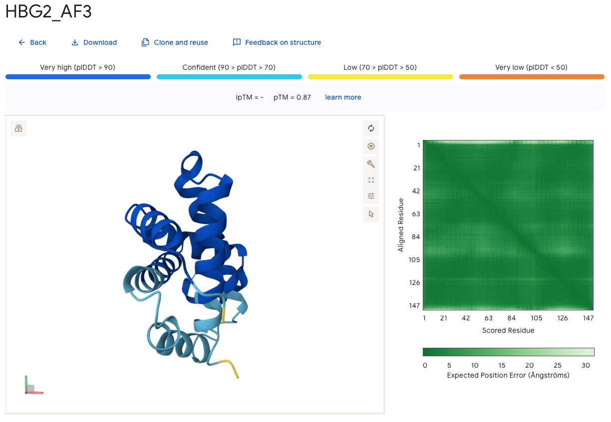
Ici, la majeure partie de la séquence est représentée en bleu clair et bleu foncé, indiquant un indice de confiance supérieur à 70% et 90% (respectivement). De plus, le dotplot est fortement teinté en vert foncé, ce qui montre la bonne confiance de position des acides aminés dans la séquence prédite par rapport à sa séquence. Le taux d’erreur est indiqué en différence de positionnement exprimé en Ångström (Å).
La confiance générale sur le document est indiquée par pTM = 0.87 soit 87% de confiance.
Une fois le résultat téléchargé et décompressé, 3 types de fichiers principaux sont disponibles
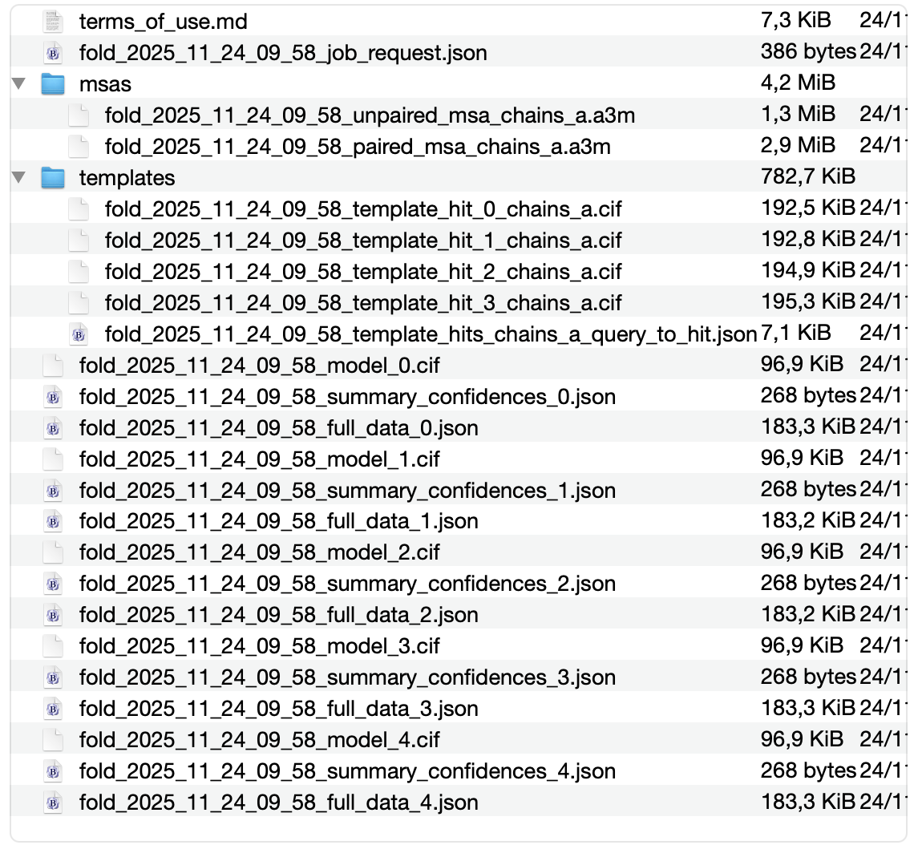
- Les fichiers de modèles (.cif)
- Les fichiers de confiance (“Summary_confidences”)
- Les fichiers “full_data” (Ces derniers sont peu utiles à lire)
Les modèles ne peuvent être lus que par un logiciel dédié tel que ChimeraX, les autres fichiers sont au format JSON qui est relativement lisible. Par exemple, on déterminera le meilleur modèle en comparant les indices de confiance (ptm / ranking_scores) trouvés dans les fichiers “Summary_confidences.json” de chaque modèle.
Dans notre cas, tous ont un indice de confiance de 87% (ptm: 0.87).
1.5 Analyse avec Chimera X
Les modèles proposés par AlphaFold server sont dans l’archive téléchargée (un exemple peut être obtenu avec ce lien
- Après décompression de cette archive, les modèles sont nommés “fold_hbg2_af3_model_” suivi d’un numéro. Le 5e modèle correspond au numéro 4 puisque la numérotation débute à 0.
- Après ouverture dans Chimera X par un clic droit (ouvrir avec…) ou en cliquant sur l’icône de chargement ou en utilisant le menu “File>Open…”, on ne trouve qu’une seule chaîne polypeptidique nommée A
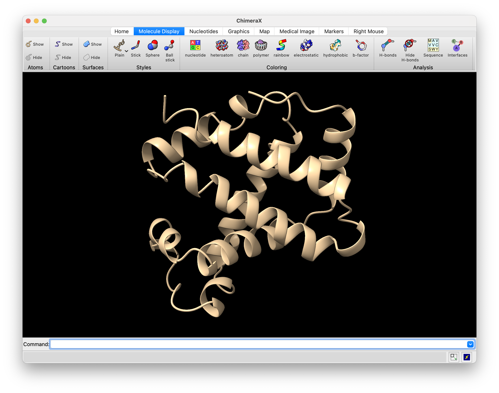
- Elle correspond à la séquence de HBG2 (on peut l’afficher en cliquant sur le bouton “Molecule Display/Sequence”)
- Pour identifier les extremités NH2 et COOH, on sélectionne l’une ou l’autre à la souris dans la séquence affichée en bas à droite de la fenêtre et on observe sur la structure la région en surbrillance correspondante.
- En mode rainbow (“Molecule Display>Rainbow”), l’affichage des différentes parties de la protéine se fait graduellement le long de la séquence du bleu (-NH2) au rouge (-COOH).
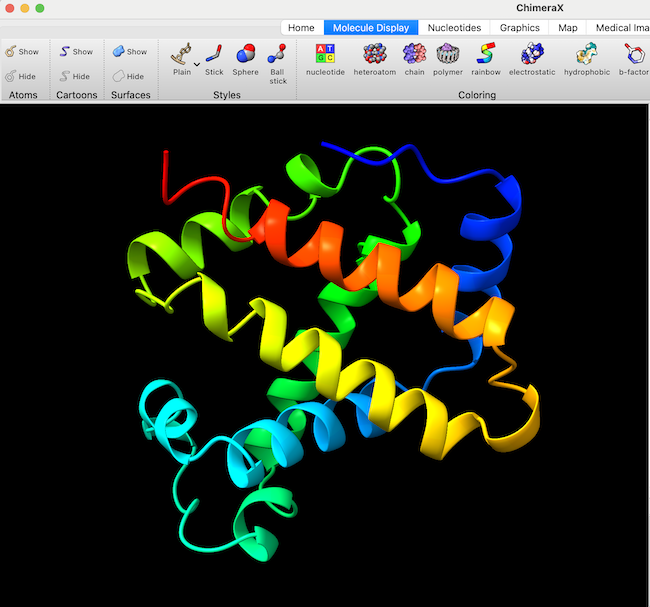
- Les boutons situés sur le bandeau permettent de changer l’affichage et le style du modèle (sélectionnez l’onglet Molecule Display pour avoir toutes les options)

Il faut ouvrir le fichier PDB stocké précédemment et le modèle calculé par AF3 dans Chimera X par la méthode de votre choix (Icône/Menu/Clic droit). Les deux fichiers chargés sont listés dans la fenêtre models à droite et apparaissent dans la fenêtre principale. Mais ils ne sont pas dans la même orientation. Pour pouvoir les superposer, il faut utiliser l’outil MatchMaker.
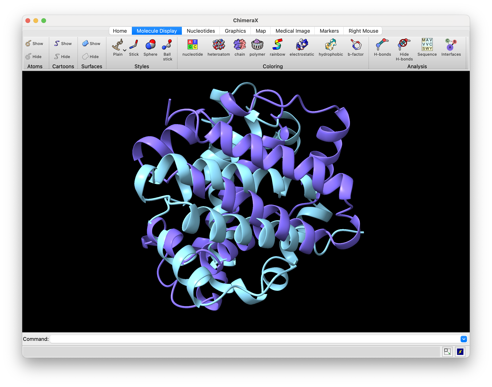
1.6 Vérification du modèle calculé avec AF2
- Vous le trouvez dans le menu tools>Struture Analysis>MatchMaker. Renseignez les informations demandées dans la fenêtre et cliquez “OK”.
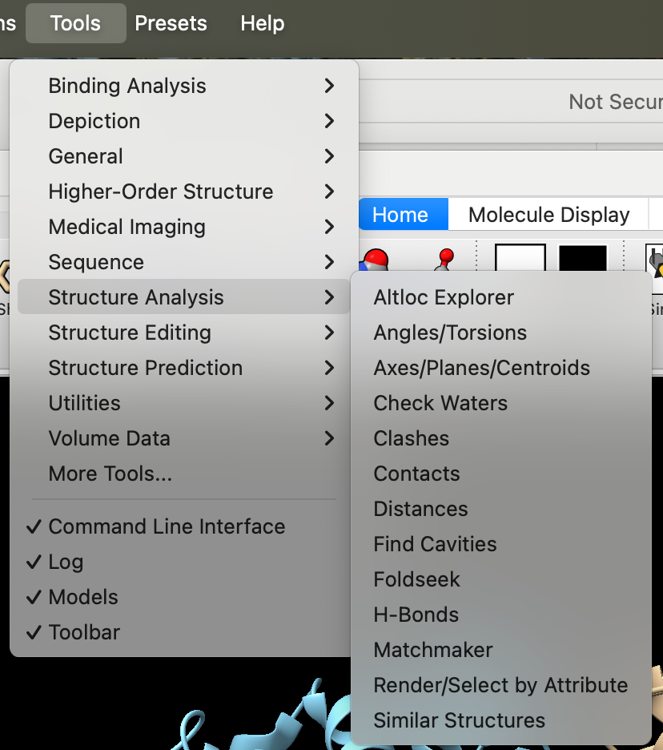
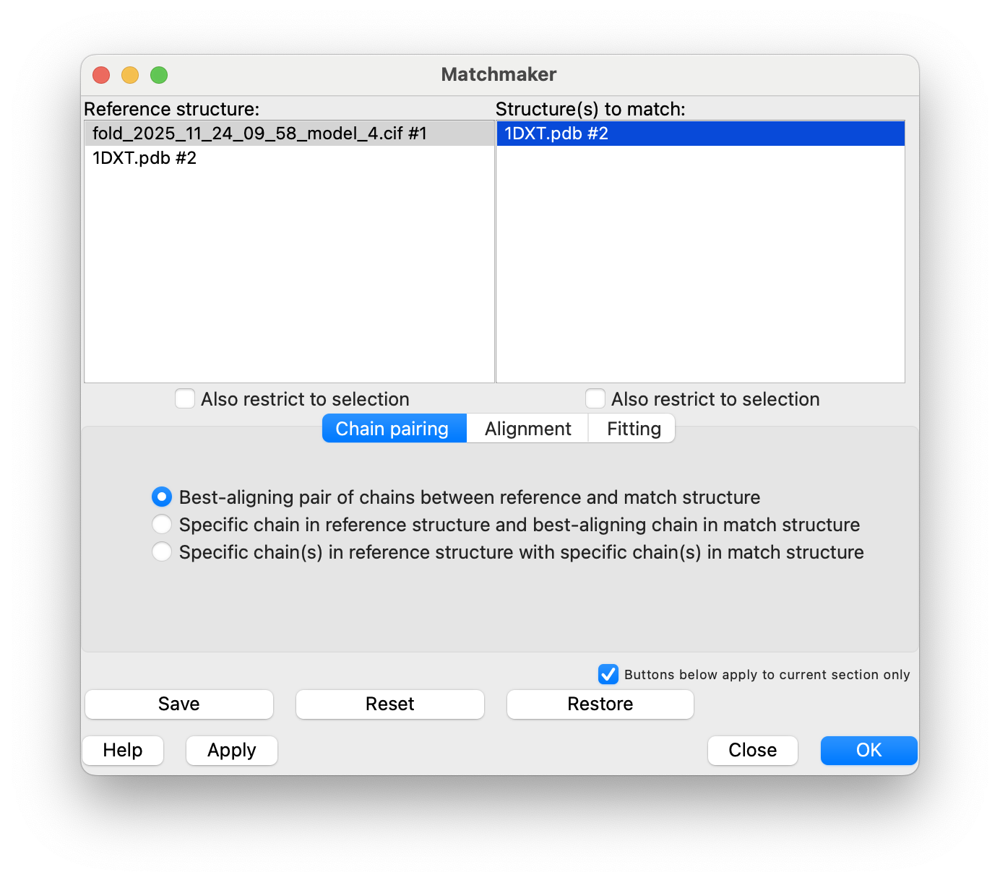
- Vous pouvez aussi utiliser l’outil en ligne de commande : Entrez la commande matchmaker dans la zone de commande et validez avec la touche “Enter/Return”
- Un message d’erreur indique “Missing or invalid matchAtoms” arguments: empty atom specifier” sous le nom matchmaker dans la zone de droite.
- Un clic sur le lien matchmaker ouvre une aide pour l’usage de la commande. On y trouve la syntaxe correcte :
(matchmaker | mmaker ) matchstruct to refstruct [ bring other-models ] options seq-align-scoring
et un exemple d’usage : match #2 to #1 bring #3
Il faut donc sélectionner les modèles celui noté #1 sert de référence et le second noté #2 sera aligné dessus, on peut éventuellement ajouter d’autres modèles (#3), mais nous n’avons pas besoin de cette option.
Donc la commande sera uniquement match #2 to #1 dans notre cas. Pour noter les modèles #1 et #2, il suffit de les sélectionner dans la fenêtre Models en cochant la case sous la main pointant le rond vert.
Une fois cela fait, on voit que les modèles sont maintenant sélectionnés (select add #1 et select #2)
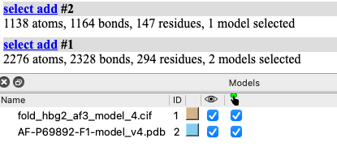
On peut maintenant lancer la commande matchmaker en respectant l’ordre des modèles. On veut utiliser le modèle AF (pdb) comme référence et aligner dessus celui calculé (cif), la commande sera donc : matchmaker #2 to #1 ici. Cela peut être le contraire dans votre cas en fonction de l’ordre d’ouverture des fichiers.
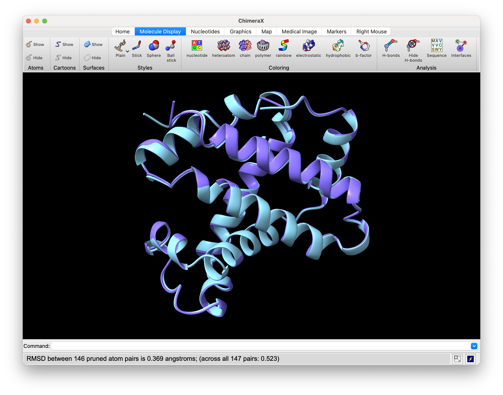
1.7 Vérification du modèle par rapport à RCSB
- Pour comparer le calcul au modèle réel de la RSCB, on ouvre les deux dans ChimeraX, comme précédemment. Il y a beaucoup trop d’information dans le modèle RCSB et il ne faut garder que la sous-unité voulue.
- On superpose avec matchmaker comme précédemment
- Grâce au boutons de style, on visualise uniquement les chaines du modèles RCSB, puis avec les liens situés dans la fenêtre de log à droite, on sélectionne chaque chaine et chaque groupe d’atomes que l’on supprime avec le bouton hide correspondant
- cliquez sur les lettres des autres sous-unités (A, C, E, G…) et supprimez l’affichage si la sous-unité n’est pas la bonne en cliquant Hide dans le bandeau supérieur, faite de même pour les atomes, et désélectionner dans la partie droite de la fenêtre toute information non nécessaire à la comparaison.
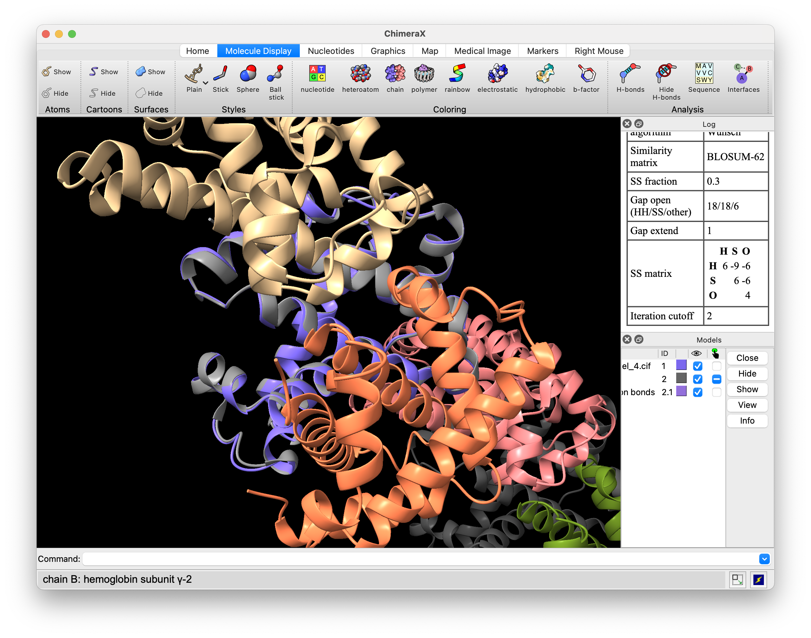
On peut vérifier que les deux modèles s’alignent parfaitement dans les régions organisées et divergent dans les régions désordonnées (NH2 et COOH). Vous pouvez avoir un affichage légèrement différent puisque le modèle calculé dépend des options utilisées pour lancer le calcul dans AlphaFold server.
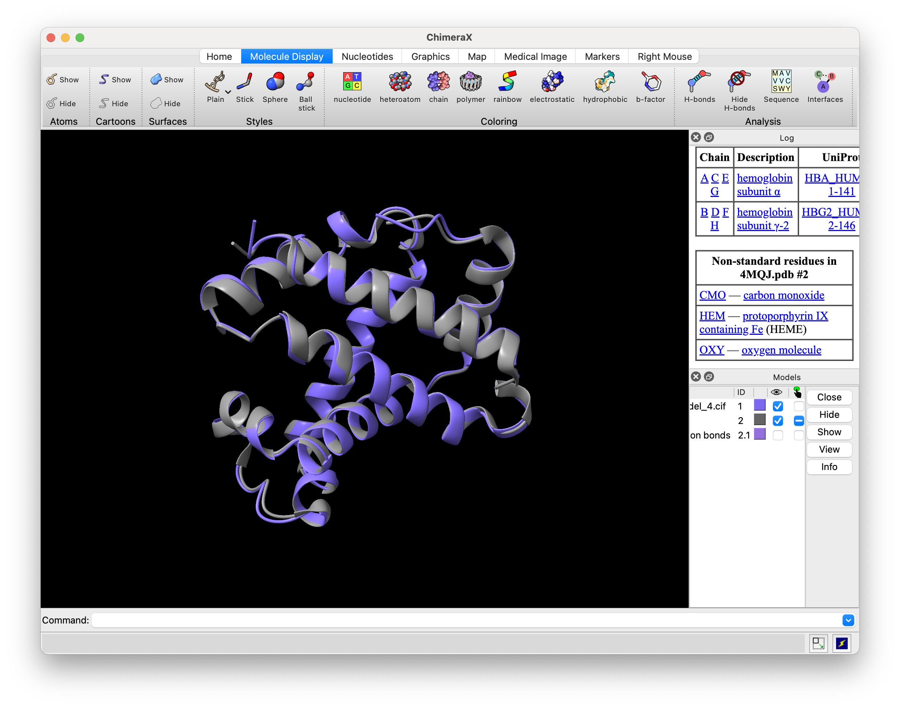